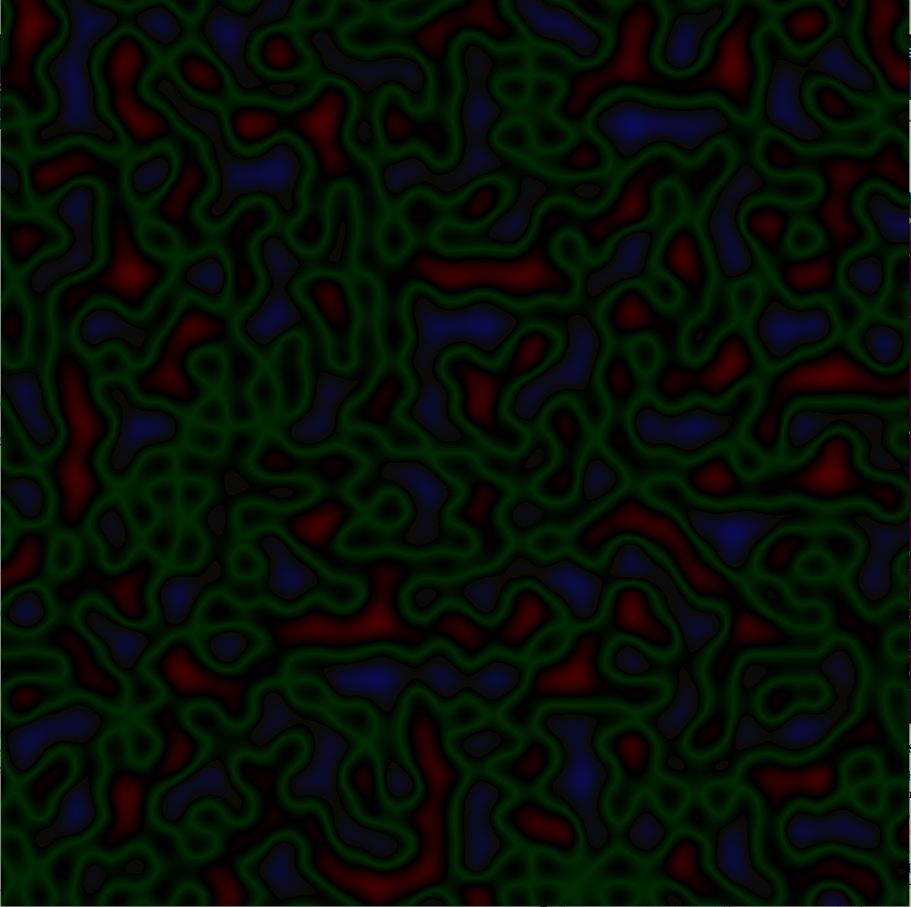
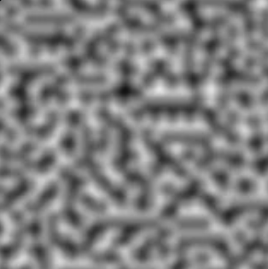

Résultats Visuels
Voici plusieurs rendus issus de différentes techniques de génération utilisées dans GPTA :
Bruit de Perlin
Bruit de Simplex
Diamond-Square

Analyse comparative
- Le bruit de Perlin produit des variations douces, idéal pour les montagnes
- Le Simplex est plus performant sur les grandes cartes avec moins d’artéfacts
- Le Diamond-Square donne des reliefs fractals réalistes et très expressifs
Performances
Les générations en 512x512 prennent entre 30 ms et 60 ms. Les cartes 1024x1024 peuvent être générées en moins de 200 ms sur une machine classique.